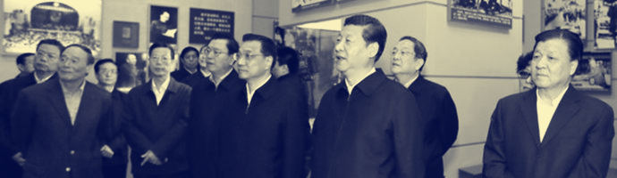

In November 29, 2012, the people's Republic of China President Xi Jinping led the new central collective leadership to visit National Museum of China "revival" exhibition at the scene. The definition of "Chinese dream" Xi Jinping, realizing the great rejuvenation of the Chinese nation is since the greatest modern dream, and confident that this dream "will be able to achieve". The famous theorist, former vice president Li Junru Party School of the CPC Central Committee thinks, build comparatively well-off society in the round is in twenty-first Century the first 20 years of "China dream". This is the first 50 years of implementation of the twenty-first Century "Chinese dream" and after a hundred years "Chinese dream" is one of the most important stages of development.
In the spring of 2013 NPC and CPPCC, because the dreams of flying warm, because the dream has become very thick. Carrying hundreds of millions of people's dream and the great trust, the great idea of "Chinese dream" as good reality.
To realize China's dream must walk the road in China, it is the path of socialism with Chinese characteristics. The road be not easily won. It is in the great practice of reform and opening 30 years to come out, come out continuously explore to set up more than 60 years in the people's Republic of China in the modern times, is a profound summary of the development process of the Chinese nation 170 years to come out, to go out of the Chinese nation 5000 years long history of civilization heritage of, having deep historical origin and realistic foundation of extensive. The Chinese nation is the extraordinary creative nation, we created a great Chinese civilization, we can continue to expand and take the road of development suited to China's national conditions. People of all ethnic groups to enhance self-confidence, theory of the socialist road with Chinese characteristics, system confidence confidence, not to move or retreat along the correct road to forge ahead in china.